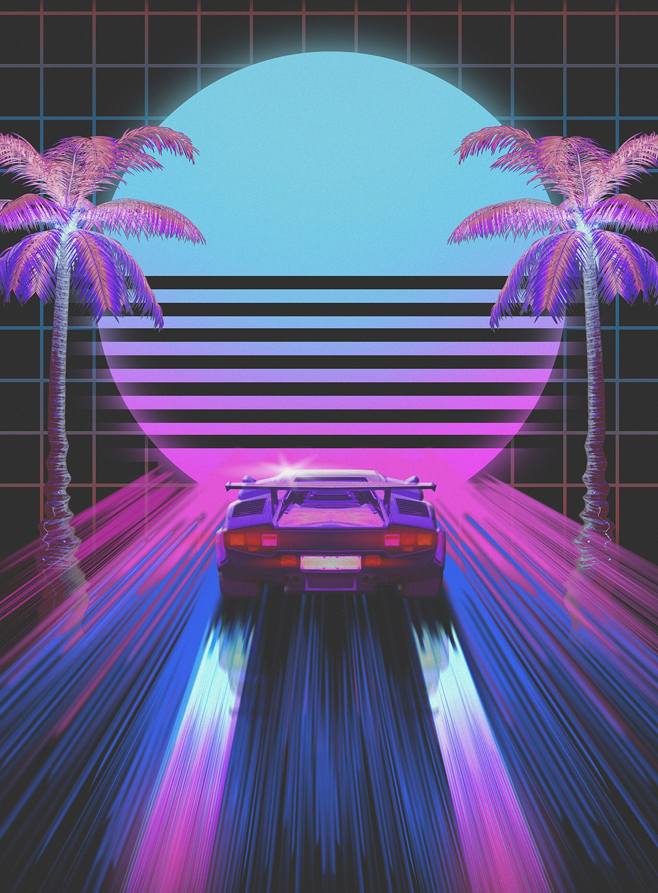
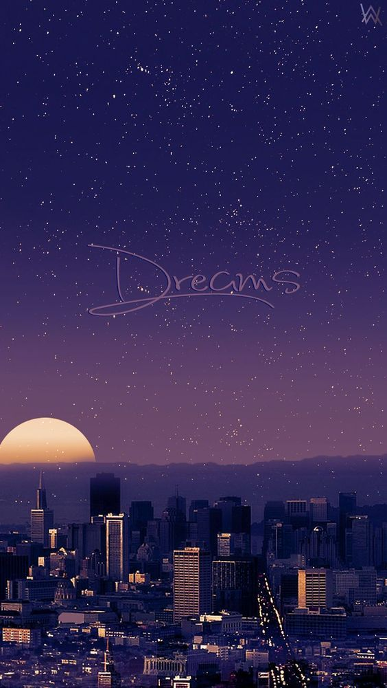
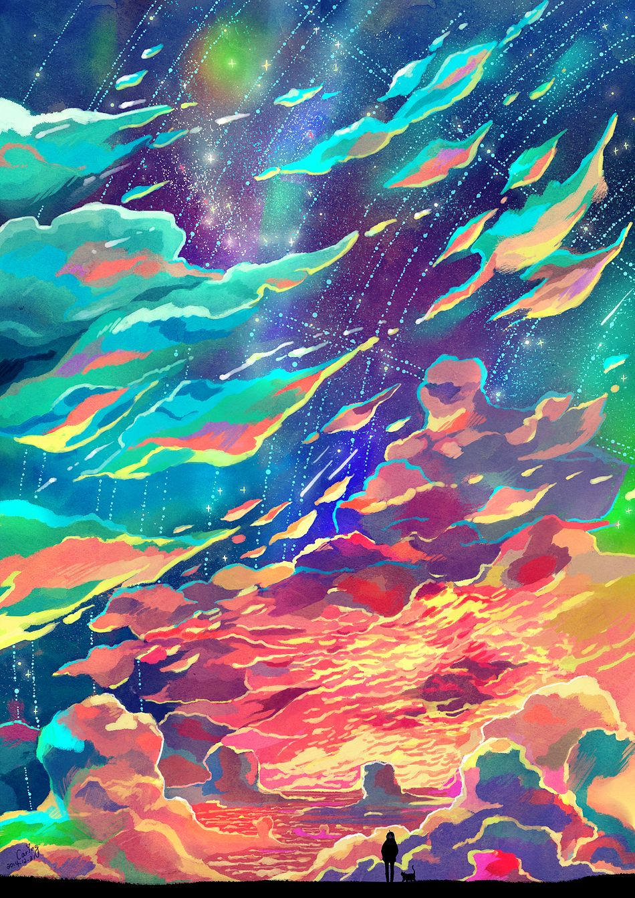
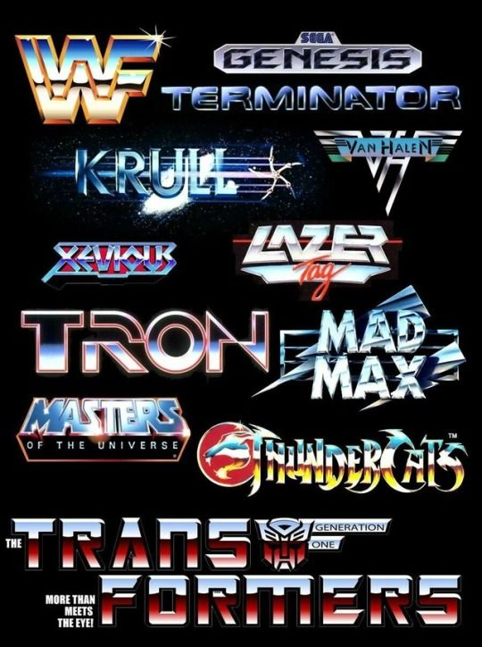
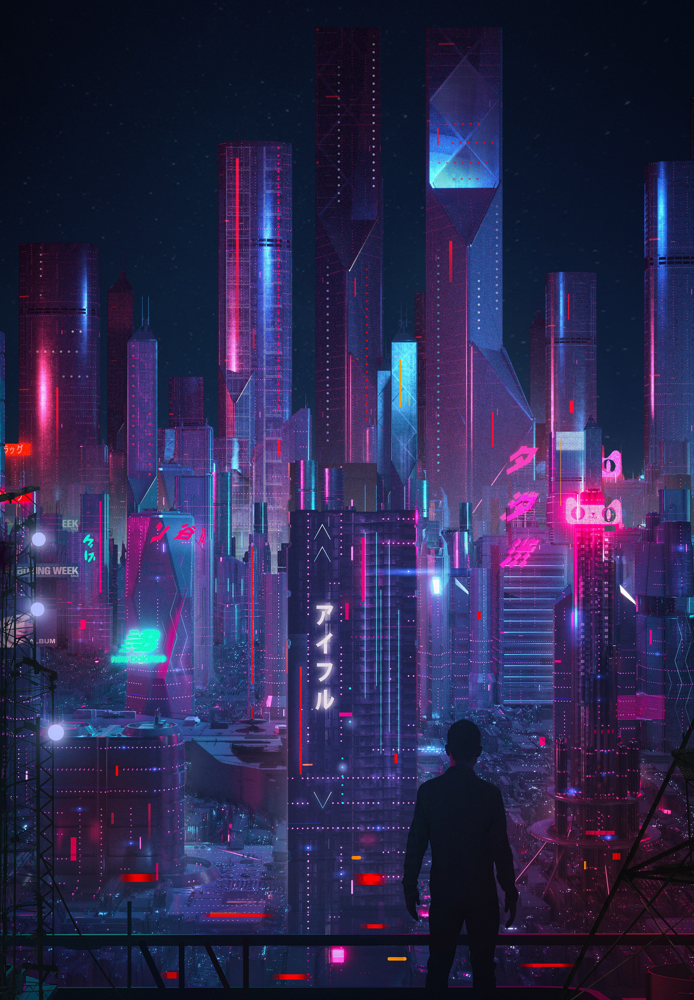
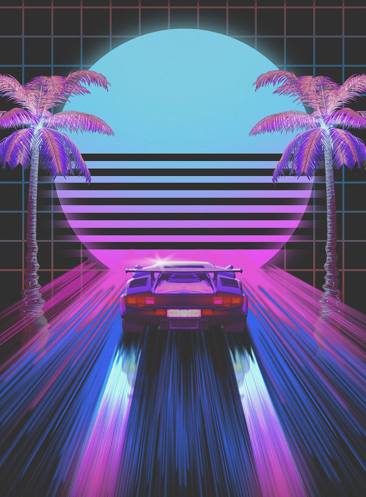
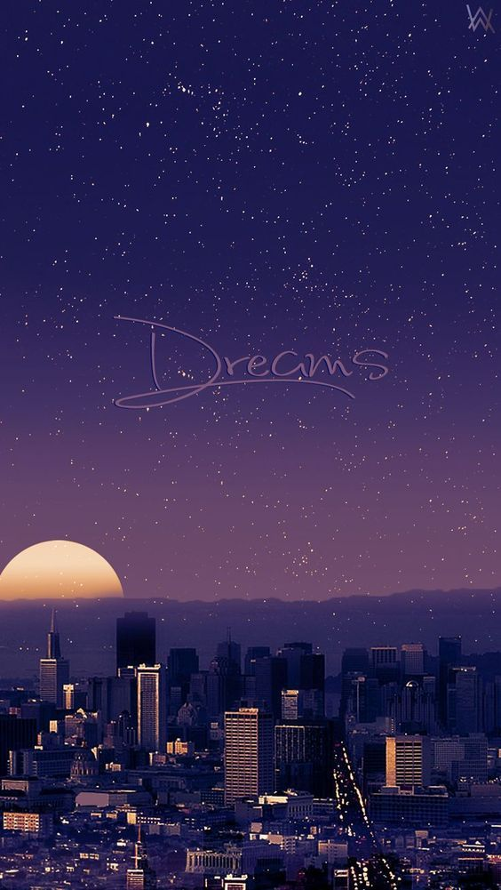
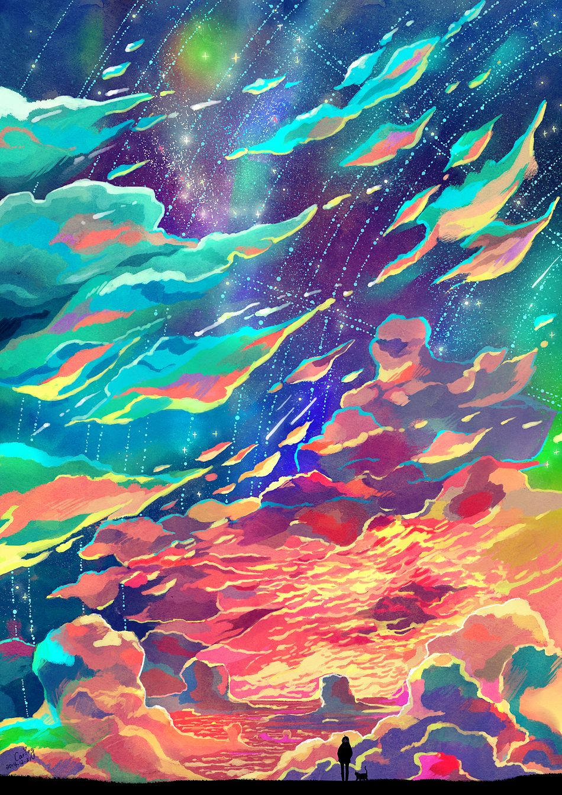
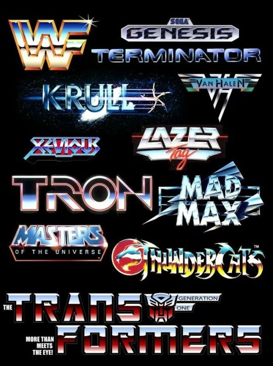
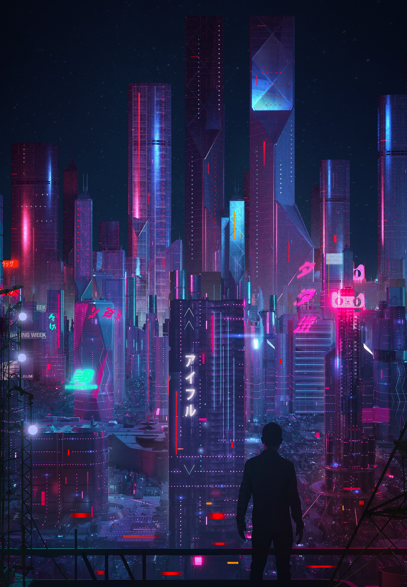

Você já ouviu falar em Sinthwave?
Synthwave (também conhecido como New retro Wave), é um estilo musical que surgiu em
meados dos anos 2000, influenciado por músicas e trilhas sonoras dos anos 80.
Musicalmente, o synthwave foi fortemente inspirado pela new wave e trilhas sonoras de
filmes, videogames e séries de televisão da década de 80 e 90. A partir de meados dos
anos 2000, o gênero se desenvolveu a partir de várias comunidades de nicho na internet,
alcançando maior popularidade no início de 2010. Compositores como John Carpenter,
Vangelis e Tangerine Dream são frequentemente citados como influências. O estilo é
principalmente instrumental, e normalmente contém elementos clichê dos anos 80 nas
músicas, como baterias eletrônicas, "gated reverb", sintetizadores analógicos, tudo para
se assemelhar com as trilhas e a ambientação daquele período, porém, o synthwave
incorporou técnicas modernas de produção como compressão de cadeia lateral e também com
uma mistura de gêneros modernos de música eletrônica como electro house.
Esteticamente, o synthwave ganhou uma perspectiva de retrofuturismo, sendo também
chamado de retrowave, emulando cenas de ficção científica e ação dos anos 80. Exemplos
de estéticas vistas em filmes e videogames são: F-Zero, In Time, Drive, Grand Theft
Auto: Vice City, Hotline Miami e Far Cry 3: Blood Dragon.
Referência: https://pt.wikipedia.org/wiki/Synthwave